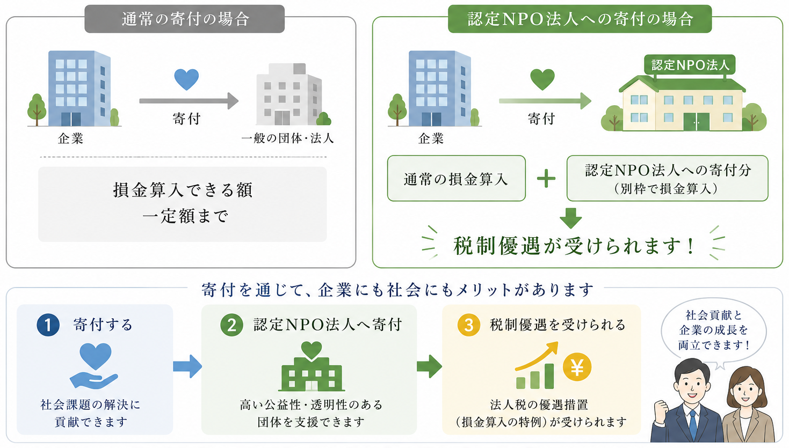

五条クラブへのご支援は、子どもたちがスポーツや学びを通じて成長できる環境づくりにつながります。
企業の皆さまには、地域社会への貢献活動としてだけでなく、SDGsの推進や
CSR（企業の社会的責任）活動の一環として、五条クラブとの連携をご活用いただけます。
「質の高い教育をみんなに（SDGs目標4）」や「パートナーシップで目標を達成しよう（SDGs目標17）」
など、持続可能な社会づくりへの取り組みとして、企業価値の向上にもつながります。
未来を担う子どもたちを地域全体で支える活動に、ぜひパートナーとしてご参加ください。
- 認定NPO法人への寄付による税制優遇
- CSR・社会貢献活動として活用
- 地域とのつながり・企業イメージの向上
- 子どもたちの成長を支える活動への参画

認定NPO法人へのご寄付は、社会貢献につながるだけでなく、法人税の優遇措置を受けられる場合があります。
通常の寄付金とは別枠で損金算入が認められるため、企業の皆さまにとって、より寄付しやすい制度となっています。
※適用には一定の要件があります。詳しくは税理士または所轄税務署へご確認ください。
当法人は認定NPO法人として、事業報告書・財務情報等を法令に基づき公開しています。
詳細は内閣府NPO法人ポータルサイトをご覧ください。
企業・法人の皆さまにさまざまな形でご支援いただけます。
ご希望や事業内容に合わせて、無理のない形で地域の子どもたちの成長を支える活動にご参加いただけます。
-
寄付によるご支援
活動の継続・充実のための資金として活用させていただきます。
認定NPO法人へのご寄付は、一定の要件のもと税制優遇の対象となります。 -
賛助会員として応援する
継続的なご支援を通じて、五条クラブの活動を長期的に応援いただく制度です。
地域に根ざしたスポーツ・文化活動の発展を支えるパートナーとしてご参加いただけます。 -
協賛によるご支援
大会やイベント、教室などへの協賛を募集しています。
地域貢献活動としてのPRや、企業と地域をつなぐ取り組みとしてもご活用いただけます。 -
物品提供
スポーツ用品や備品、消耗品など、活動に必要な物品のご提供も歓迎しています。
企業で使用されていない備品や資材なども、お役立ていただける場合があります。 -
ボランティア・人的支援
イベント運営や子どもたちの活動支援など、社員の皆さまによるボランティア参加も歓迎しています。
CSR活動や社員研修、地域交流の機会としてもご活用いただけます。
その他ご不明な点や気になることがございましたら、
お気軽にお問い合わせください。